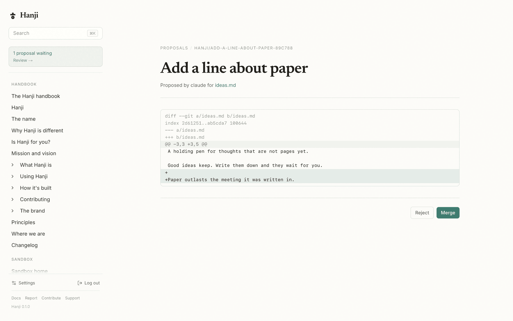

Agents
Agents get their own surface. Two of them, really: raw git, which they already know, and a small MCP server for the times a scoped, hosted read helps. Both go through the same permission check a person does.
Mint a token
An agent authenticates with a bearer token, scoped to what it may touch - a whole mount, a folder, or exactly one page, the same path grants people have.
pnpm hanji token <name> <mount[/folder|/page.md]=read|read+propose>...
# a read-only agent for the handbook
pnpm hanji token docs-reader handbook=read
# an agent that can also propose changes to two mounts
pnpm hanji token my-claude handbook=read+propose notes=read+propose
# a narrow one: read one folder, propose to a single page
pnpm hanji token intern notes/reviews=read notes/reviews/draft.md=read+propose
The command prints the token once. A read scope lets the agent search and read within its grant. A read+propose scope adds the right to propose changes there. Anything outside its grants the agent cannot see, and cannot even tell exists - a locked page and a missing page answer identically. Content visibility rules never widen a token: an "everyone" rule speaks to people, and an agent holds exactly what it was granted. See Permissions.

Connect it
The MCP server speaks Streamable HTTP on 127.0.0.1:4101. Point your agent at it with the token.
claude mcp add hanji --transport http http://localhost:4101/mcp \
--header "Authorization: Bearer <token>"
The tools
| Tool | What it does | Needs |
|---|---|---|
hanji_list_pages | List every page the token can read, with mount, path, and title | read |
hanji_get_page | Fetch one page's Markdown by mount and path | read |
hanji_search | Full-text search across readable mounts | read |
hanji_propose | Propose a page change as a branch, and a PR where GitHub is connected | read+propose |
No MCP client? curl works
Every tool is also a plain HTTP endpoint on the same port, same token, no JSON-RPC envelope and no streaming to parse. For scripts, cron jobs, and agents that can run a shell but not an MCP client:
curl -H "Authorization: Bearer <token>" "http://localhost:4101/pages"
curl -H "Authorization: Bearer <token>" "http://localhost:4101/page?mount=handbook&path=install.md"
curl -H "Authorization: Bearer <token>" "http://localhost:4101/search?q=permissions&limit=5"
curl -H "Authorization: Bearer <token>" "http://localhost:4101/propose" \
-d '{"mount":"notes","path":"ideas/from-cron.md","title":"An idea","content":"# It\n"}'
/pages and /search answer JSON, /page answers raw Markdown, /propose
answers the branch (and PR URL where GitHub is connected). The permission
check is the same one the MCP tools run; an unknown path answers with a map
of the surface.
Propose, do not overwrite
hanji_propose never edits a page in place. It creates a branch named for the change, commits the new content there, and pushes it. If HANJI_GITHUB_TOKEN is set, it also opens a pull request and hands back the URL. A person reviews it and merges. That is the whole point. An agent can suggest all day, and nothing lands in your knowledge base until someone says yes.
Where does the suggestion go? Straight into the front: see Proposals for the review-and-merge side of this loop.
Read Command reference for the rest of the CLI.